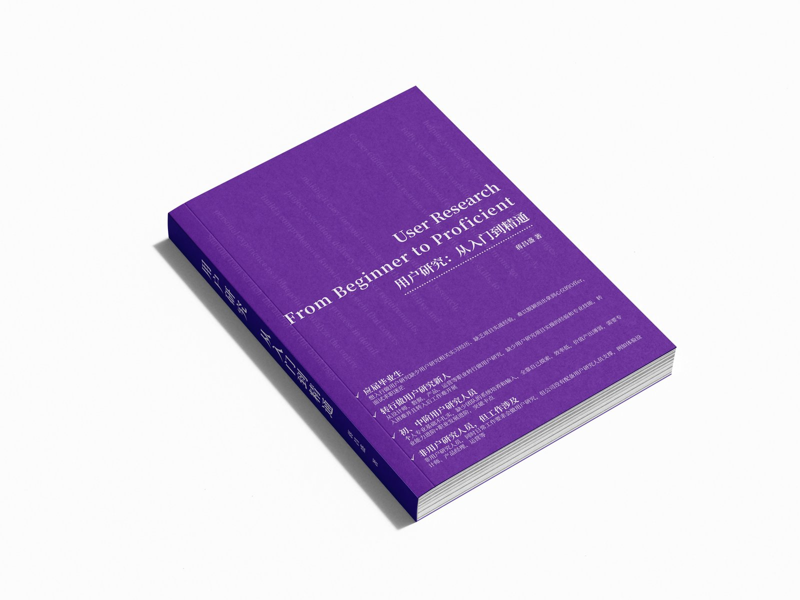
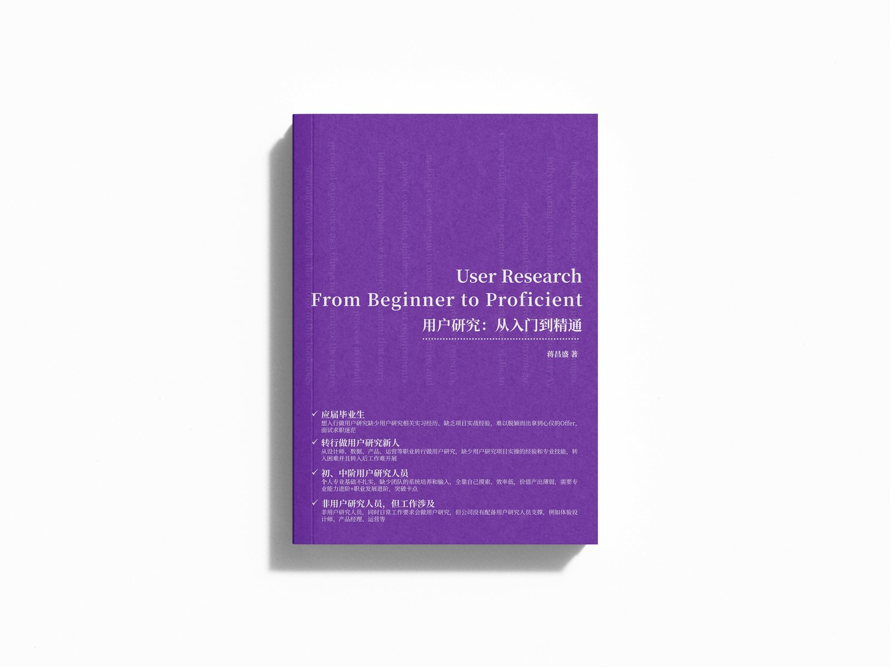

User Research · From Beginner to Proficient
这里是蒋昌盛《用户研究：从入门到精通》的读者服务站。
你可以从这里下载书中提到的全部配套模板包——
研究计划书、访谈提纲、问卷骨架、用户画像、研究报告……即下即用。
免费 · 无需注册 · 即下即用

— 备用下载入口 —
夸克网盘 国内网络不稳定时使用 ↗下载后解压使用 · 可商用 · 可二次修改

关于本书
这本书不是堆砌术语的教材，也不是罗列方法的工具大全，而是一本面向真实商业现场的实战指南。
它从公司为什么需要用户研究讲起，带你走过一次完整研究项目的全过程：接住模糊需求、拆解研究问题、设计研究方案、选择合适方法、完成招募与执行、从材料中提炼洞察、写出有说服力的报告，并推动结论真正进入产品决策。
它既讲桌面研究、问卷调查、深度访谈、焦点小组、工作坊、可用性测试等基础方法，也覆盖用户画像、JTBD、AARRR、NPS、KANO、Cohort、MaxDiff 等常用模型——但更重要的是，每一个方法、每一个模型，都附了大量真实项目复盘，告诉你什么时候该用、什么时候不该用、用错了会带来什么后果。
"我现在把这些弯路都写在这里。希望这些笔记，能帮你少走一些弯路。" —— 蒋昌盛
目标读者
目录速览
从基础方法到复杂项目，从入门到求职、从单次研究到长期能力建设。
联系作者
书里的判断和建议只是作者此刻的认知，一定会过时、一定有偏颇、一定会被你在某个项目里推翻。
如果你读到某一段忍不住反驳"老蒋这里写得不对"——请告诉作者。下一版会改进。